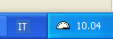

* Apache (testato) o altro webserver con supporto php (su php.ini bisogna settare: magic_quotes_gpc = On)
- Controllare che nel file di configurazione di Apache sia permesso l'utilizzo di file .htaccess: AllowOverride All
* database Mysql
* Browser: Mozilla Firefox (testato), Konqueror, Internet Explorer, ecc...
2) Esempio di installazione veloce su sistemi WinXP-2000-NT
Installare il pacchetto WAMP5 (WampServer) prelevato dal sito www.wampserver.com.
Avviare WampServer facendo attenzione a che l'icona sia diventata di color bianco 
e passandoci con il mouse appaia la scritta (WAMP5 - All services running) per avere la conferma che l'istallazione sia andata a buon fine.
Scompattate tutti i file presenti nel file gazie.zip di installazione nella directory(cartella) di publishing del vostro web server:
- ad es.c:\wamp\www\ se avete installato WampServer, alla quale potete accedere direttamente cliccando sull'icona e poi su www directory.
- /htdocs/gazie se avete installato separatamente Apache, Mysql, Php.
Potete modificare il file gconfig.php in accordo con il vostro db, utente, password MySql.
Quindi aprire il browser (consigliato Firefox) ed andare sulla pagina http://localhost/gazie/setup/install/install.php e cliccare sul pulsante "INSTALLA"
Se invece avete fatto l'upload su un server remoto allora dovete andare sulla pagina http://vostro-server/gazie/setup/install/install.php e cliccare sempre sul pulsante "INSTALLA"
Quando il database è stato popolato cliccate su "QUI".
Inserire login e password che nel file install_x.x.xx.sql (di default) sono rispettivamente "amministratore" e "password".
Il presente software e' stato testato con WAMP5 su WinXP Home.
Le ultime versioni di WAMP5 di default risponde alle richieste al solo localhost 127.0.0.1,
Per far accedere al server anche le altre macchine della Vostra rete LAN dovrete cliccare su "Metti Online" e configurare opportunamente il firewall per permettere ad Apache di comunicare con l'esterno.
Ci limitiamo a queste poche indicazioni in quanto la configurazione di un server http è cosa molto complessa specie per quanto riguarda la sicurezza del sistema; pertanto consigliamo di non esporre il software su Internet.
Si ricorda,inoltre, che se si è in produzione si deve settare su php.ini
display_errors = Off
e non On; questo per evitare di visualizzare eventuali warning/notice dovuti ad imprecisioni.
3) Precisazioni per installazioni su sistemi Linux
Oltre a quanto detto per le installazione su sistemi Windows si ricorda che:
- qualora il vostro PHP non ha di default l'estensione php_mysql lo dovrete attivare decommentando la riga :
extension=php_mysql.so (extension=php_mysql.dll sui sistemi Windows) oltre alla necessità che questi file siano presenti.
- se avete problemi con il server web compreso nella vostra distribuzione potete installare XAMPP
- La creazione e la popolazione del database può essere effettuata utilizzando phpMyAdmin o direttamento dalla console:
# cd gazie/setup # mysqladmin create gazie # cat install_x.x.x.sql | mysql gazie
# cat update_to_x.x.x.sql | mysql gazie
4) Altre informazioni importanti
Qualora si decidesse di usare questo software per l'amministrazione dell'azienda si consiglia di usarlo solo all'interno di una Rete Locale(LAN), se, invece, si scegliesse di affacciare il servizio alla Rete Globale (WAN) si verrebbero a creare delle problematiche di sicurezza dei dati da risolvere in maniera opportuna. In particolare, qualora si avesse la necessità assoluta di esporre "qualcosa" su Internet (WAN) per esempio ordini da clienti rappresentato dal file admin_broven.php, si consiglia di modificare sia il predetto script che quelli per il login in modo da fare un parsing adeguato di tutto ciò che ci arriva dal client che per sua natura è pericoloso! Inoltre, per l'accesso al database MySQL è cosigliabile usare come user un nome diverso da "root" oltre ad una password attualmente inutilizzata, quanto detto è consigliato con un'avvertimento anche quando si accede a PhpMyAdmin.